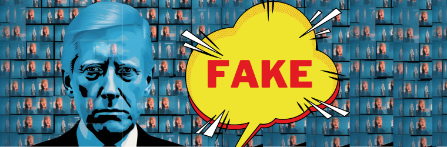

Growing Concerns With AI Generation
What is AI Generation?
With the exponential growth of artificial intelligent (AI) technology, the use of AI generation is becoming popular among many different users. Different interfaces are able to generate realistic videos, images and voice messages under a users request. Advancing AI systems are able to take the users input to replicate reality increasingly well. Common AI Generation sites include Adobe Firefly, Runway and Gencraft. These AI generators are mainly found on websites or applications and are widely accessible to anyone online. Most AI generation sites are free, however some companies may have a subscription program where the user can access a wider variety of higher quality generated content for a low cost. AI generated content for personal use and entertainment is used by many everyday is safe and a great way to use the innovative technology.
AI Generation In Politics
The use of AI video, image and voice generation used in the field of politics can be detrimental to the outcome of political standings and overall operations. The advancements in AI have forever changed the environment of political advertising through concerns about ethical campaigning and the creation of deepfakes. For example, a user could type in key words such as “Donald Trump Drinking” and artificial intelligence is able to create an unique and realistc image for your query in just seconds (See example image below). Read more in the article to learn about the the introduced risks of voting due to development of AI generation.

Serious concerns of AI misuse in politics:
- Harmful AI generated content can be made against politicians & political parties which increases the spread of election disinformation
- YOUR right to vote at a fair election may be at risk due to malicious deepfakes and the inability to determine the stability of a party from their campaign
- This could change the course of serious political outcomes and standings as it deters voters from voting accurately
How can this be avoided in the future:
- Governments should start to enforce regulations and create new restrictions regarding the use of AI in political situations to eliminate the spread of political deepfakes and to encourage ethical campaigning. For example, there has recently been public discussion suggesting that it should be mandotary to label any AI generated content in all political campaings.
- As a voter, you should conduct proper research and carefully consider political advertisements and messages before believing media as it may be influenced by false and AI generated pieces. If you see political media that seems strange or suspicious consider
- Before major elections or votes, make sure you are getting voting information from regularly updated and trusted news sources to avoid being impacted by AI false images.
- For more information on how (generative) AI is effecting NSW communities not only politically but also through threatening creative industries' livelihood, cyberattacks, censorship and much more you can read the Campain for AI Safety's Inquiry into artificial intelligence (AI) in New South Wales to parliament here.
Creation of Deepfakes
Artificially intelligent generation has allowed different parties or biased organisations to create deepfakes against opposing political leaders. Whilst healthy competition between poltiical groups is important during electoral processes, this a growing concern as it makes it increasingly harder for public voters to distinguish against reality and AI-generated messages. This undermines the freedom of public voters and questions the regulations of voting rights. Fake AI generated content may be created last minute and can harmful to the opposition, giving them difficulty and little time to debunk the false image. As this is currently legal and there are no government regulations on the subject, a voter’s right to a fair election are at stake.
The creation of these deepfakes in political situations also raises risks such as allowing less popular or corrupt political groups (even groups that support the ideology of communism, facism) to exploit stable government bodies by creating false public images against them. In addition, the creation of deepfakes can also spread election disinformation and ruin fair elections. Overall, this unethical process deters people from achieving their right to vote and can seriously affect the outcome of crucial elections.
“the political deepfake moment is here.” - Robert Weissman, head of Public Citizen
Deepfake Example
Earlier this year, a deepfake involving the AI Generation of U.S President Joe Biden’s voice was used to spread election disinformation. The entirely fake prerecorded voice message was sent to voters in the northeastern state of New Hampshire by telephone. Prerecorded voice messages that are mass sent can be known as the marketing strategy; ‘robocalling’. The political message seemed like Biden was urging voters to stay out of the primary contest which stated by Julie Chavez Rodriguez, head of the re-election campaign stated that the deceptive robocall was created “to suppress voting and deliberately undermine free and fair elections.”. Whilst the creator of the deepfake is unknown, it is clear that they had the intent of spreading election disinformation to gain an advantage. To protect yourself and others against electoral disinformation, read NSW Electoral Commission's Stop and consider campaign.
In addition, the Republic Nation Committee (RNC) which is a committee from the main rival of the Democratic Party in the US has responded to Joe Biden's reelection campaign by creating a video that involved numerous AI generated images of the president. Whilst there is a very small disclaimer that it was built entirely by AI, it seems as though it was purposely hidden in the top left corner of the video making it hard for users to see. Many voters may not have seen the small disclosure and considered all the images to be true, and could impact their perspective on his reelection.

Unethical Campaigning
Because there are currently no enforced regulations on AI usage in political advertisement, the ethical measures of campaigning are being discussed by many in democratic nations. Traditionally, parties with bigger budgets who have more financial resources have been able to create more elaborate campaigns (therefore gaining more supporters). Whereas smaller parties with tighter budgets and less financial resources gain less attraction from their campaigns. However, now that anyone can use AI video generation for free or at a low cost and with no coding experience, allows less-resourced campaigns to be able to compete against larger parties.
Although some could argue that this is just simply boosting smaller campaigns and giving them accessibility to competition, it is also important to note the ethics of budgeting in political advertisement. For example, parties that usually have elaborate campaigns shows voters that they have the financial resources and spendable money to run a stable government. However, now the financial state of a party cannot be determined as AI video generation can create elaborate advertisements effortlessly at a low cost without prior computing knowledge. This overall disrupts the ethical equation of political advertisement as public voters may be deceived by the skills and finance of parties.
"We simply cannot wait in silence until ‘everything is figured out’ before committing to ethical agreements about the use of new generation AI in political and advocacy campaigns." -Ned Howey, author of Tectonica's AI ethics article
Overview
However, unethical campaigning isn’t just limited to the false image of the stability and financial state of a party. For example Freedom House’s report, Freedom on the net 2023 suggests that just over the past few years, 16 countries have utilised advancing AI technology such as generative text, audio and imagery to “sow doubts, smear opponents, or influence public debate.”. While used correctly, AI can be a supportive tool to many across the globe.
The misuse of AI generation in politics is detrimental to healthy competition and campaigning across politicians and is impacting not only these leaders but it’s affecting entire nations and is violating an individual’s right to vote. Many organisations and campaigns are coming together show the desperate need for government regulations and legislations on AI generation especially in the political field. The government must act quickly in order to stop the spread of deepfakes, disinformation and unethical campaigning as an individual's right to fair voting is at risk in democratic societies. In the mean time, individuals should be aware and cautious of deepfakes and the misuse of AI generation in politics and they should educate friends, family and others around them about these deceptive images.
References
{kind=link}